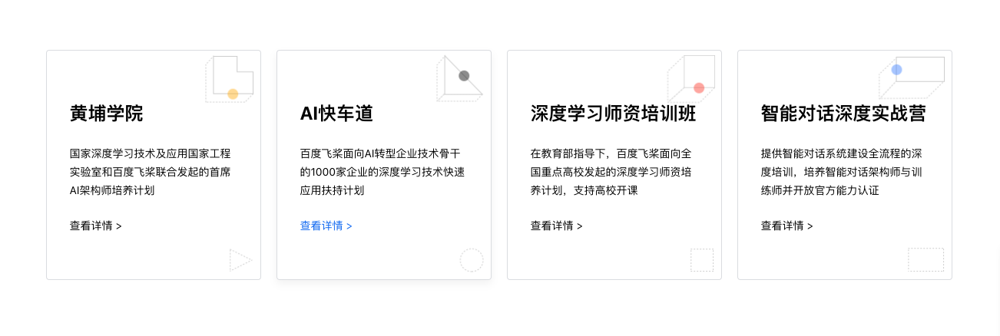
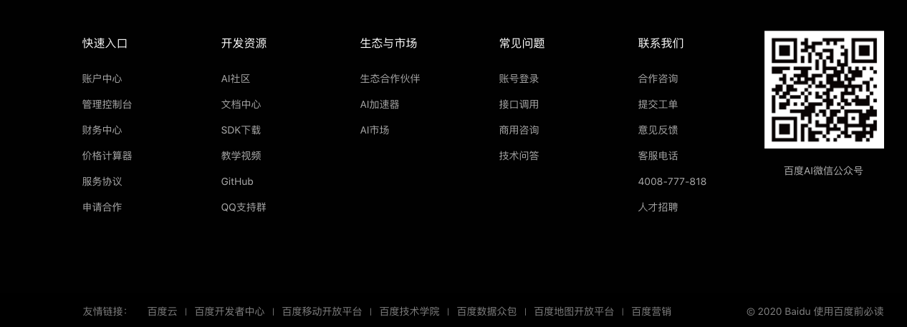
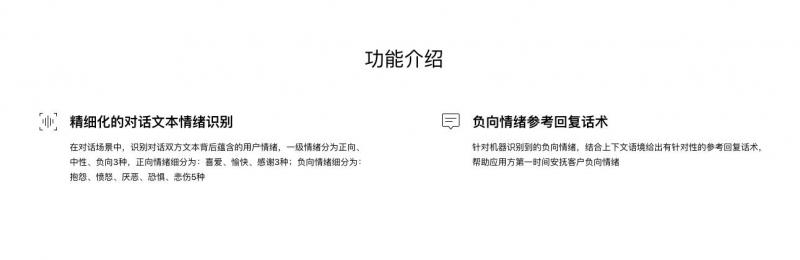
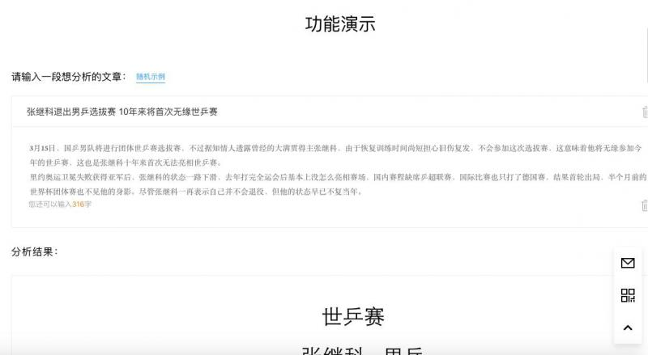
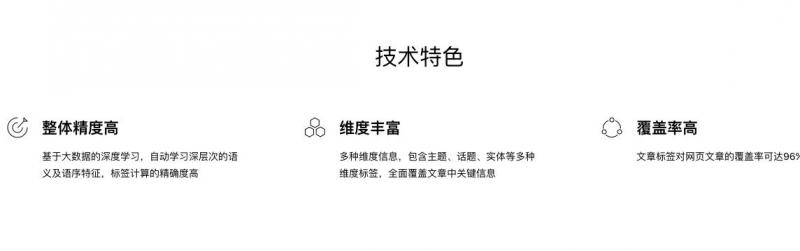

10
展示端首页
- 传智AI赋能：咨询对话系统优化
- 利用AI技术，帮助信息中心从真实咨询对话中自动提取关键实体，如学员姓名，手机号，意向校区和意向学科，帮助咨询人员提升学员转化效率。
- 传智AI赋能：试卷自动批阅系统
- 利用AI技术，帮助院校邦部门对学生网上作答的填空题题型进行自动打分，并给定对应的评分置信度，帮助教师更好更快的完成海量试卷批阅。
- 传智AI赋能：数据分析之图像解析
- 利用AI技术，帮助数据分析团队对全国机构图片进行解析，从而判断该各个校区受疫情影响是否在线上进行教学，从而完成更具有说服力的数据分析报告。

-
文本标签化
- 给定一段文本，通过语义技术，进行兴趣类标签判断。
-
实体抽取
- 给定指定格式的文本，通过上下文关联，进行主要实体抽取。
-
相似度打分
- 给定两段文本，通过AI模型判断语义相似，得到它们的相似度分值。
-
图片分类
- 给定一张学员学习图片进行判断是否在线上或者线下学习。
-
学习路线
- 针对零基础小白精心设计，开启你的AI学习之旅吧！
-
联合立项
- 如果你的部门或团队已经积累了一定的历史数据，并希望进行AI赋能，请联系我们！
-
行业应用
- AI真的火热吗，来看看整个互联网圈中的AI应用案例，或许会给你一些启发！

- 二维码（我的二维码）
- Github
- 抖音号
- 官网地址
- 我的团队
- 院校邦
- 项目信息站
- 信息中心
详情页展示banner
- 立即使用按钮跳转功能演示
-
文本标签化
- 给定一段文本，通过语义技术，进行兴趣类标签判断。
-
实体抽取
- 给定指定格式的文本，通过上下文关联，进行主要实体抽取。
-
相似度打分
- 给定两段文本，通过AI模型判断语义相似，得到它们的相似度分值。
-
图片分类
- 给定一张学员学习图片进行判断是否在线上或者线下学习。
功能介绍

- 功能小图标 + 文案
- 文本标签化
- 这是一款专注于泛娱乐领域的标签化系统，它尤为擅长处理与明星，音乐，影视，游戏，美食等相关的文本内容并生成合适的标签。可输入的文本内容包括：对话，评论，留言，描述等。
功能演示

- 建议使用上下的形式，输入的框只有图片和文本两种样式，输出框只有文本
- 必须有随机示例，且需要比较明显的按钮
- 文本标签化
- 输入文本样式：
我爱踢足球
- 输出文本样式：
[
{
"label": "足球",
"score": 0.715871,
"related": [
"体育"
]
}
]
应用场景
- 形式为：一段文案，一张图片（合作logo）
- 文本标签化：
- 文案：该系统应用于传智播客python web项目的推荐系统之中，用于用户之间的兴趣推荐，对教学来讲，更加真实的还原了企业级的web项目，并在一定程度上将AI引入web课堂。
- 图片：python web组logo
技术特色

- 三段文案，三张图片（具体模型，优化工具，部署工具）
- 文本标签化：
- 1，使用Fasttext模型进行多标签多分类
- 2，对模型进行Keras tuner
- 3，使用tf-serving进行多模型部署